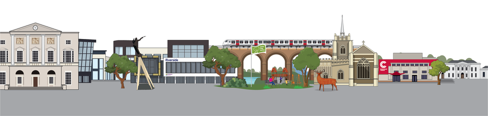

Welcome to Chelmsford

The first neighbourhood, Beaulieu Park, which comprises
615 homes was completed in 2005. Following this success,
Countryside Zest and Chelmsford City Council worked together
in the promotion of a new larger neighbourhood which was promoted
through the local plan process
and a subsequent area action plan.

High Chelmer Shopping Centre offers visitors over 50 stores
and services all under one roof, ranging from well-known brands
to smaller independent retailers.
Our wonderful mix of relaxed grab-and-go eateries to delicious
bars and restaurants will fuel any trip
to Chelmsford.
Chelmer Valley Riverside is a 17.6 hectare Local Nature
Reserve along the banks of the River Chelmer in Chelmsford
in Essex.
The northern end has the river, unimproved grassland,
veteran hedges, scrub and woodland. The southern area is
more managed, with mown grass as well as large trees and
an area of marshland.

High Chelmer Shopping Centre offers visitors over 50 stores
and services all under one roof, ranging from well-known brands
to smaller independent retailers.
Our wonderful mix of relaxed grab-and-go eateries to delicious
bars and restaurants will fuel any trip
to Chelmsford.